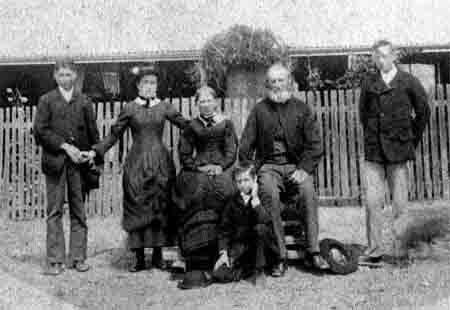

| LEGGETT family (BET BET & BERRIMAL) Genealogy Website |
| ENGLAND BET BET BERRIMAL Decendants Resources/Links |
| This website is to
promote genealogical contacts with Leggett relations originating from the
BET BET and BERRIMAL regions of central Victoria, Australia. |
| Edward Henry Leggett and his new wife Ruth (nee Cundy) came to Melbourne as immigrants from England, arriving in Melbourne on the clipper ship PERSIAN in December, 1852. Edward Henry was born in Ramsgate Kent abt. 1832, and Ruth Cundy was born in Devonshire abt. 1832, and they were married in Ramsgate, Kent on the 8 September 1851. |
|
They had four children: |
Pleasant Amelia Leggett, born 1864 in Bet Bet, died 1870 in Bet Bet. John Henry Leggett, born 1868 in Bet Bet. Henry Edward Leggett, born 1870 in Bet Bet. William James Leggett, born 1873 in Bet Bet. |
|
Edward Henry was at Fryers Creek gold diggings in late 1854, as his signature is on a memorial from the diggers at Forest Ck/Fryers Ck presented to Governor Charles Hotham in December 1854 regarding a levy tax on gold. He was known to be farming at Bet Bet from at least 1864 to 1879. He is then listed as a farmer from Avoca Forest (now called Logan) in 1880. The family then established a house at Berrimal (see photo), it being used as a temporary place for Methodist services in the early 1880's. Unfortunately, little information has come to life about the period from 1853 to 1864. Ruth Leggett died in 1897 at Mt. Korong, and by this time their three remaining children John Henry, Henry Edward and William James had married and were having children in the areas of Fentons Creek, Berrimal, Mt. Korong, Inglewood, and Melbourne South. Of interest is that the family raised Sarah Douglas as a child, along with their own children. Sarah was born 1864 at Carisbrook (parents William Douglas & Susan Chesney), however her mother died in 1875 and it is thought that the two families must have been close. Many of Edward and Ruth's grandchildren remained in the general mid-central Victorian region, and known cemeteries to have family graves are Ararat, Dunolly, and Wedderburn. This website contains historical details from England, Bet Bet, and Berrimal, as well as descendent tree details, surname lists, immigration details, links to forums, other genealogy sites and geographical/locality information. Please take time to email us with your comments and/or interests for inclusion in the guest book. |
|  Last update: 11th July 2009 |
Email us on dalmura dot com dot au with tim at the front. Privacy & copyright Sitemap Surname Lists Kent & Devonshire, England : Cundy, Leggett Victoria, Australia: Aggett, Barby, Bevan, Craig, Faulls, Forster, Gladman, Groom, Herd, Hunt, Mason, McGeary, Morrison, Polkinghorne, Robinson, Still, Sullivan, Turner,Watts, Westbrook, Wright |